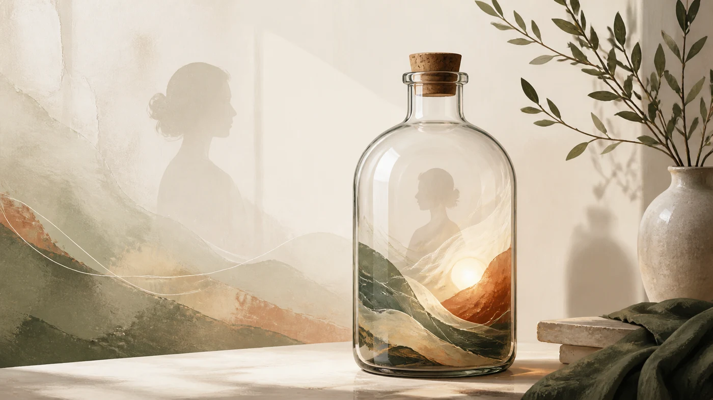

Джулия Тодорова
LinkedIn: 7 март 2025 г. Сайт: 30 юни 2026 г.Какво се случва, когато бутилираме емоциите си
Текст за потиснатите емоции, разликата между контрол и регулация и начина, по който неизразеното преживяване намира изход в психиката, тялото и отношенията.
Прочетете статията